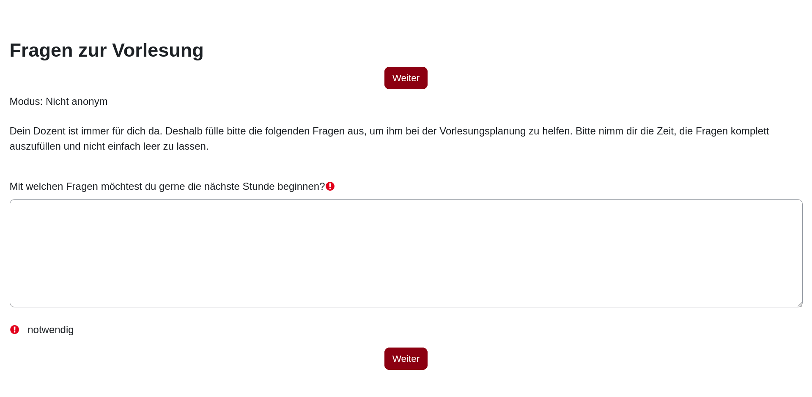

Architektur verteilter Systeme
Backendprogrammierung mit JavaScript
Synchrone Webservice-Kommunikation
Asynchroner Nachrichtenaustausch
Die Vorlesung folgt einem abgewandelten „Inverted Classroom Model“:
Jedes Selbststudium besteht aus einem Kapitel im
Onlineskript, Fragen zur Vorlesung und einer Lernkontrolle.
Auf jedes Selbststudium folgt eine Theoriestunde zur Klärung von Fragen und Besprechung weiterer Inhalte.
Anschließend wird die Lernkontrolle in Moodle fällig, da diese in die Modulnote einfließt (s. nächste Seite).
Dazwischen bearbeiten wir Übungen, praktische Aufgaben und ein benotetes Programmierprojekt.

Das Skript wird laufend aktuell gehalten. Bitte haben Sie deshalb Verständnis
dafür, wenn sich die Inhalte innerhalb des Semesters kurzfristig ändern oder neue
Inhalte nachgereicht werden.
Bild: Gestern Nacht beim Schreiben des Onlineskripts. ü•±
OpenAI DALL-E, Prompt: Mad professor working late at night at his computer
Das didaktische Konzept der Vorlesung ist darauf ausgelegt, dass jede:r
die Ziele erreichen und dabei eine (sehr) gute Note erreichen kann. Dies
setzt jedoch Vorraus, die Verantwortung für den eigenen Lernerfolg zu übernehmen
und sich sowohl in den Präsenzstunden einzubringen als auch das Selbststudium
gewissenhaft zu bearbeiten. ü•¥
Anti-Patterns in der Vorlesung
Nur passiv zuhören wollen
Erwarten, dass die Lehrperson alles vorbetet
Sich nicht trauen, sich zu melden bzw. mitzumachen
Übungszeit für Klatsch und Tratsch nutzen
Die Lehrperson ist kein Alleinunterhalter. ü§π
Die Vorlesung macht am meisten Spaß, wenn alle mitmachen.
Anti-Patterns im Selbststudium
Erst kurz vor der nächsten Vorlesung lernen (wenn überhaupt)
Das Onlineskript nur grob überfliegen
Die Videos im Onlineskript nicht anschauen
Die Quizze im Onlineskript nicht machen
Die Aufgaben im Onlineskript nicht machen
Die Lernkontrollen (in Moodle) aufschieben
Das Feedbackformular in Moodle nicht ausfüllen
Nat√ºrlich k√∂nnen Sie nicht immer alle Materialien durcharbeiten. üíØ
Planen Sie aber trotzdem bitte ausreichend Zeit für das Selbststudium ein.
Anti-Patterns zur Portfolioprüfung
Alle Aufgaben schon am Anfang des Semesters bearbeiten können wollen
Zu spät mit der Bearbeitung anfangen
Sich von den anderen Gruppenmitgliedern tragen lassen
Die Lösung der Aufgaben an ChatGPT & Co. abdrücken
Das Portfolio wird semesterbegleitend bearbeitet, um den Lernweg zu dokumentieren.
Bei Fragen und Problemen k√∂nnen Sie sich jederzeit melden. Die Lehrperson bei√üt nicht. üê∂
Viele Lehrpersonen machen **aktivierende Lehre**, um die Lernwirksamkeit ihrer Vorlesungen zu erhöhen.
Aktivierende Lehre bezeichnet dabei alle Lehrhandlungen, die darauf abzielen, die Studierenden nicht
nur passiv teilnehmen zu lassen (sog. Frontalunterricht), sondern gezielte Lernhandlungen anzuregen,
die zu einer besseren Aufnahme und Durchdringung der Lehrinhalte abzielen.
Manche bauen auch **Partizipationsangebote** ein, um die Studierenden die Vorlesung mitgestalten zu
lassen oder die Studierenden an bestimmten Stellen mitentscheiden zu lassen.
Vgl. Chi, M. T. (2009). Active‐constructive‐interactive: A conceptual framework for differentiating learning activities.
Topics in cognitive science, 1(1), 73-105. Vgl. Chi, M. T., & Wylie, R. (2014). The ICAP framework: Linking cognitive engagement to active learning outcomes.
Educational psychologist, 49(4), 219-243.
Bildnachweise:
Wikimedia Commons: Olivier RM,
Pixabay: StartupStockPhotos,
Pixabay: TheDigitalArtist
Vgl. Mayrberger, K. (2019). Partizipative Mediendidaktik: Gestaltung der (Hochschul-)Bildung unter den
Bedingungen der Digitalisierung. Beltz Juventa. Vgl. Kärner, T., Jüttler, M., Fritzsche, Y. et al. (2023). Partizipation in Lehr-Lern-Arrangements:
Literaturreview und kritische Würdigung des Partizipationskonzepts. Erziehungswissenschaften 26, 1053–1103.
Direktes Feedback durch Abstimmungen am Anfang und Ende der Vorlesungsstunden darüber,
wie wir weitermachen sollen.
Durch eingestreute Präsentationen der einzelnen Gruppen zu ihren Portfolioprojekten
oder den Arbeitsergebnissen einer Übungsstunde.
Durch einen selbst gewählten Anwendungsfällen mit großen Freiheiten bei den persönlichen
Lernzielen und eingesetzten Werkzeugen.
Durch ein gemeinsames Brainstorming zu den Prüfungskriterien mit anschließender
Diskussion und Abstimmung.
Durch Feedbackmöglichkeiten in der Vorlesung sowie das Projekt als Anlass, um das Lehren
und Lernen gemeinsam zu reflektieren.
Als Entwicklungsumgebung werden wir Visual Studio Code, da der Atom-Editor leider nicht mehr
weiterentwickelt wird. üôÅ Es handelt sich um eine weit verbreitete IDE mit Unterst√ºtzung f√ºr
alle gängigen Programmiersprachen und Betriebssysteme.
Weit verbreitete IDE für alle gängigen Betriebssysteme
Geschrieben in HTML und JavaScript (basierend auf der Chrome Webengine)
Open-Source von Microsoft (Made in Switzerland) üá®üá≠
Für die Backendprogrammierung werden wir Node.js als JavaScript-Laufzeitumgebung nutzen.
Es handelt sich um eine weit verbreitete Runtime für nebenläufige verteilte Anwendungen
auf Basis der V8-Enginge des Google Chrome Browsers.
Beinhaltet den Node Package Manager zur einfachen Installation aller für ein Projekt benötigten Bibliotheken
Liefert uns alle Build- und Testwerkzeuge, die wir während der Entwicklung benötigen
Beinhaltet eine komplette JavaScript-Laufzeitumgebung für die serverseitige Programmierung
Für die gemeinsame Erstellung und Pflege von Quellcode gelten Versionskontrollsysteme wie
Git als anerkannter Standard. Sie versionieren und dokumentieren alle Änderungen und stellen
sicher, dass alle Projektmitglieder auf denselben Quellcodes arbeiten.
Git ist inzwischen das am weitesten verbreitete Versionskontrollsystem.
Die Nutzung kann rein lokal oder mit einer Onlineplattform wie GitHub erfolgen.
Von den Machern von Linux üêß.
Falls Sie auf Ihrem Computer keine zusätzliche Software installieren können oder sich bestimmte
Dienste über das DHBW-Netzwerk nicht erreichen lassen, können Sie auf die Gitpod Online-IDE ausweichen.
Diese bietet eine IDE und Linux-Umgebung direkt in Ihrem Browser.
IDE und Linux-Umgebung mit vorinstallierten Werkzeugen komplett in der Cloud.
Keine Registrierung erforderlich, sofern Sie bereits einen GitHub Account besitzen.
Quellcodes müssen in einem öffentlich sichtbare Git-Repository auf GitHub liegen.